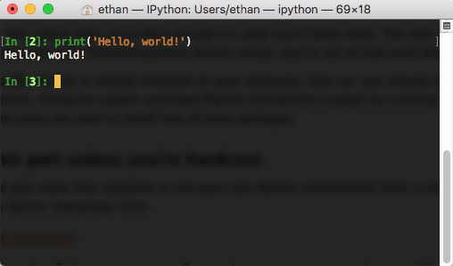
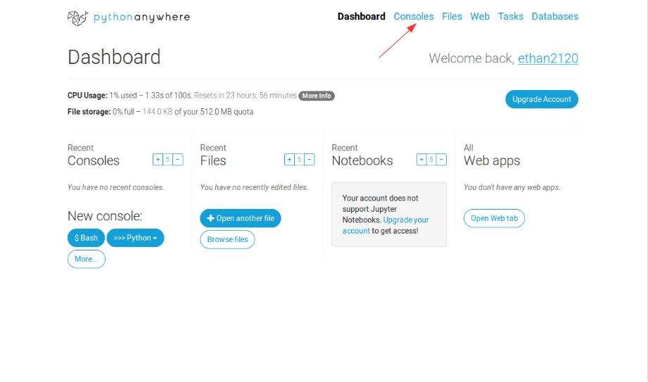
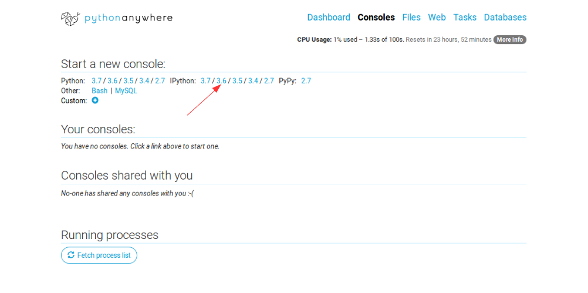

Getting set up for CS 2120¶
We’re going to be learning the programming language Python, which means you need a Python interpreter on your computer. By far the easiest option is download the (completely free) Academic version of the Anaconda Scientific Python Distribution (Anaconda, for short):
The advantage of Anaconda is that it pulls together Python and a whole bunch of other packages all into one place. There are versions for Windows, OS X and Linux, all of which contain everything you’ll need for this course (and a tonne more).
Download the free base version of Anaconda (Python 3.7 version)
Consult the Installation Guide for detailed installation steps
Have a quick look at the Getting started with conda page
IPython¶
IPython is an interactive Python interpreter that we will use heavily in this course. It comes with Anaconda by default and can be used in any major operating system.
IPython is a very useful tool. It allows you to run anything from single program statements to large, complex programs. One of its most convenient features is that it allows you to interact with programs. More on this after we get acquainted with Python.
After you’ve installed Anaconda, load up your operating system’s command line.
Windows: Use Command Prompt or just ‘cmd’
Linux/MacOS: Use Terminal
Load IPython by typing:
ipython
Alternatives¶
Want to write Python code from anywhere you can get access to a webbrowser? No messy installation. No Fuss. Just code. Check this out:
You have to register, but the free option does more than enough for what you’ll likely need. The only downside is that you need an internet connection and if the PythonAnywhere servers choke, you’re out of luck until they’re back up.
Once you log in, you’ll arrive at your Dashboard. Open an IPython terminal as follows.
 If you’re running Linux or MacOS, Python is already installed on your computer. Even so, you should still consider setting up your own environment. Using the system-provided Python distribution is great for running basic programs, but you might run into trouble once you start to install lots of extra packages.
Don’t bother with this part unless you’re hardcore¶
If you’re feeling frisky, you’re also more than welcome to roll your own Python environment from scratch. Start by downloading and installing a Python interpreter from
This will give you a bare-bones plain Python environment. During the course, we may make use of libraries that do fancy things like plotting graphics. If you install Anaconda, all of those libraries are included. If you’re rolling your own, you’ll have to install the libraries yourself by hand. The most straightforward way to do this is with Setuptools, which is pretty easy. Except when it isn’t.
Warning
The advantage of building your environment yourself, by hand, is that you’ll learn a bunch of interesting auxilliary skills beyond just the programming being taught in the course. If you end up wanting to use Python in your own research, you might need specialized libraries that aren’t in Anaconda, so these skills could be useful. The disadvantage is that you may spend a whole bunch of time fighting to get packages installed, when you could’ve used that time to learn more about programming.